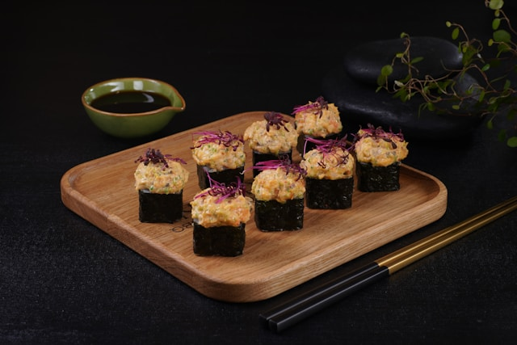

Рецепт запечённых роллов

Запечённые роллы
Попробуйте запечённые роллы
Вкуснейший вариант роллов, который нужно обязательно попробовать
Ингридиенты
Нори
Форель
Рис
Вода
Уксус
Авокадо
Творожный сыр
Крабовые палочки
Сыр полутвёрдый
Майонез
Шаги
Подготовить все ингредиента для запечённых роллов
Хорошо промыть рис в проточной воде
Варить рис после закипания в течении 10 минут
Смешать рисовый уксус с рисом и перемешать деревянной лопаткой
Включить духовку для разогрева на 200 градусов
Очистить форель от кожи и косточек и нарезать на длинные полоски
Очистить авокадо от косточки и кожуры. Нарезать его на длинные ломтики
Накрутить роллы
Разрезать получившийся ролл на 8 частей
Крабовые палочки очистить от упаковки и мелко нарезать
Сыр натереть на мелкой тёрке
В миску добавить сыр, крабовые палочки и майонез. Всё хорошо перемешать до однородности
Выложить получившиеся роллы в форму для выпечки. Выложить сверху роллов получившуюся крабовую смес
Запекать в течении 15 минут